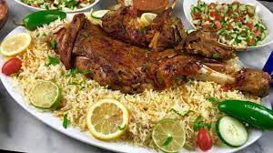

Alhaneth
Ingredients
- Meat: 3 kilos
- Vegetable oil: a cup
- Tomato: 2 tablets (cut into slices)
- Onions: 2 (medium size, sliced)
- Basmati rice: 3 cups
- Garlic: 5 cloves (cut into slices)
- Saffron: little
- Sweet green pepper: 2 tablets (cut into circles)
- Salt: 2 teaspoons
- Black pepper: 2 teaspoons
- Cumin: a teaspoon
- Turmeric: a teaspoon
- Hill: 4 grains
- Lemon leaf: a teaspoon
- Mixed spices: a tablespoon
- Bay paper: 3 sheets
- Cinnamon: Oud
- Cloves: 3 pcs
- Banana leaves: 3 sheets
Recipe
- Wash the meat well with water, then put it in a large bowl.
- Put the salt, black pepper, turmeric, mixed spices and cumin in a small bowl and stir them together.
- Add the previous set of spices to the meat and stir well until the meat is seasoned and covered well with spices.
- Put a little vegetable oil in a wide pan, then add the meat and stir well until it changes color and takes on a brown color.
- Soak rice in hot water for half an hour.
- Wash the lemon and banana leaves well until they are completely clean.
- Arrange banana leaves and lemon in the bottom of the pressure cooker.
- Add half of the onion slices and distribute them well.
- Add half the amount of garlic, tomatoes, and sweet green pepper.
- We distribute the meat over the vegetables, then add the rest of the onions, garlic, tomatoes and sweet green pepper.
- Cover the meat with banana leaf and lemon. Close the pressure cooker well, then put it on a low heat for an hour and a half or until the meat is completely cooked.
- We put an appropriate amount of water on the fire to boil the rice and leave it until it boils, then add the rice with a little vegetable oil and a small pinch of salt and stir it a little.
- Add the soaked saffron and distribute it, then leave the rice on a low heat until it is cooked.
- Put the rice in a serving dish, then arrange the pieces of meat on top, then decorate it with raisins, almonds, and fried pine nuts, and serve hot.